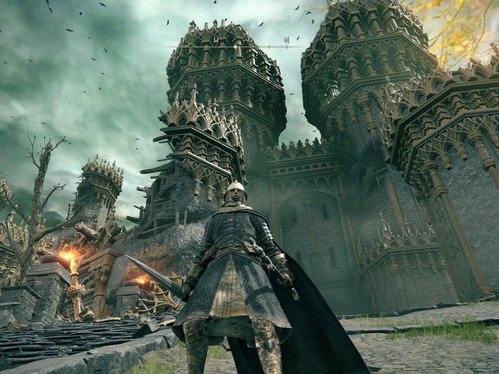

Browse
Character index
Discover profiles in the character database.
A fan-made character archive for browsing profiles, reviews and hypothetical battles.
Explore the preview
Discover profiles in the character database.
Explore matchups in the source application.
Read the app’s character ratings and reviews.
Static product preview. Sample labels identify illustrative content; links on this page navigate within the preview. Live actions require the original project.